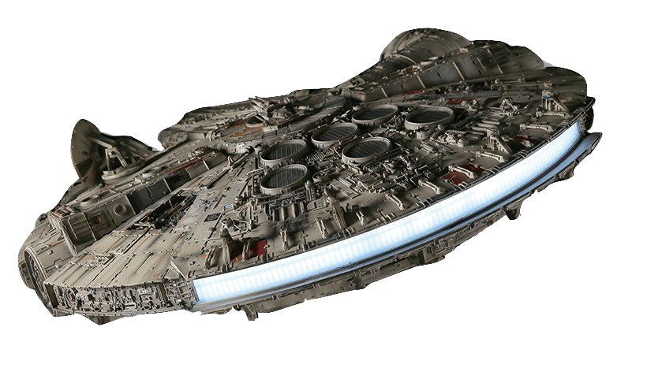
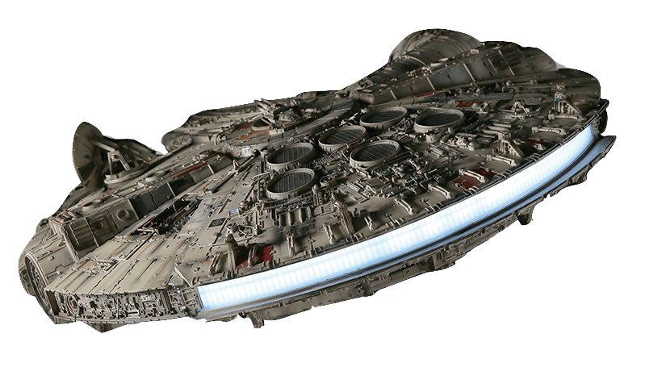

Han Solo’s ship is one of the most recognizable in the Star Wars universe. Known as the fastest hunk of junk in the galaxy, a bucket of bolts, and the ship that made the Kessel Run in less than 12 parsecs, the Millennium Falcon has a reputation. Han and Chewbacca have made many “special modifications” to the Corellian YT-1300 light freighter over the years to maximize its speed and agility. The ship has pulled Han, Chewie, and their friends out of scrapes on multiple occasions and played a role in destroying both Death Stars.


 
